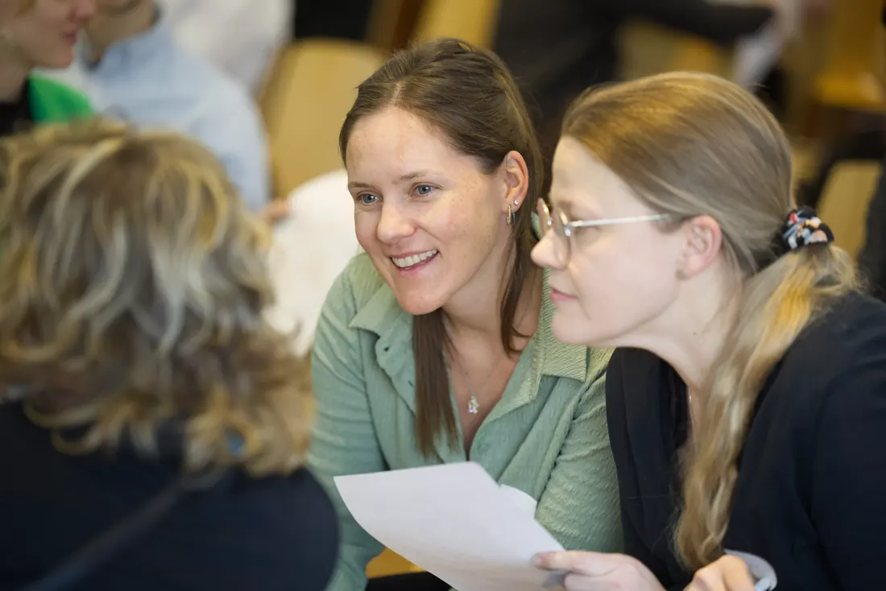

2026-10-01
Die Teilnahme an diesem Programm hat meine Erwartungen übertroffen
SEET ist die einzige Organisation in der Schweiz, die Geflüchtete unabhängig von den Universitäten selbst beim Zugang zur Hochschulbildung unterstützt. Das Studienförderungs-Programm von SEET vernetzt Geflüchtete mit…